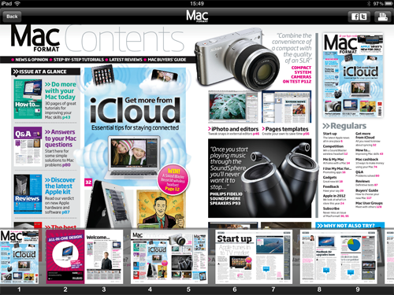

Digital replicas
A digital replica is the closest option available from FutureFolio to a print magazine. It is also the fastest and easiest digital magazine type to create and in most cases requires little or no additional modifications to a print publication in order to create. Digital replicas are displayed using the PDF file format that most publishers are well acquainted with.
A digital replica in action.

Magazines created in this format use a simple page turner interface that enables readers to browse, read and zoom in. If possible, FutureFolio will also automatically allow readers to search inside your PDFs, if your text is stored in an easily read format.
FutureFolio also enables the addition of interactive elements and features to page turner issues. This however requires some additional setup which is outlines in the Adding Interactivity section.
What's in this section:
- Optimising your PDFs - ensure digital issues display correctly and are true to their print counterparts.
- Creating page thumbnails - engage your readers while the page loads and is ready for zooming with preview thumbnails.
- Packaging your issue - once your assets are complete you will need to prepare them for usage.
- Adding interactivity - create quick and simple interactive features without extra man-hours.
- Page jumping - create a more fluid experience with interactive contents pages and buttons.
- Showing a slideshow - display swipe-able image slideshows without interrupting the issue's page numbering and flow.
- Playing video - add trailers and videos to your pages.
- Playing audio - create a simple audio playlist or just play the odd audio effect.
- Launching a HD page - get the best of both worlds by adding single HD pages to your digital replica.
- Adding web pages - send readers to external websites with standard PDF weblinks
This documentation is for Future internal use only and may not be disclosed to anyone unless they are under NDA.
If you have any questions, please email
legal@futurenet.com.